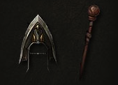

武僧
武僧是通过纯粹意志力量掌控神授之力的神圣武士。治疗波、守护真言以及神圣攻击都是他们所掌握的高超技巧。
熟练的武僧可以赤手空拳或者装备各式均衡的武器打出迅捷的攻击。在战斗中，他们强调高机动性高耐久力，在近战中游刃有余而避免陷入持久的肉搏战中。
武僧的攻击主要集中在肉搏上。他们可以给予单个敌人极致的伤害来消灭它，或者通过掌击或者月牙踢的方式发出元素能量波形成短程范围性的攻击。
关键特性
-
精神能量武僧在连击时，他们将储存了精神能量让他们可以消耗以作出惊人的技巧--迷惑多个敌人，击退一群敌人，或者在近战中向后跃出脱离战斗。
-
连击武僧的近战攻击在仔细的进行连续进攻时变得更为强力。他们可以获得更多的精神能量，提升输出伤害，并产生独特的效果让一位武僧可以击败任何敌人。 -
真言戒律的武僧们可以使用他们精神的力量，通过真言的形式释放出来，这是一种持续较长的笼罩力量，能够起到治疗或者增强武僧或者任何附近的友军的作用。 -
机动性和速度武僧们在战场上拥有无可匹敌的战术机动性。任何武僧都是能够在敌人之间或周围快速移动的，给予敌人侧翼打击或随着形势的需求突击敌人的命脉所在，专注与防御的武僧们相比其他角色更擅长闪躲敌人的攻击。
能量源：内力
为了对抗邪恶，武僧依靠自身蓄积的内力，一种与他们个人掌握与训练相关的能量源。
内力的补充是缓慢的。它的再生有两种方式--由特定的技能和攻击，以及由完整的连击产生。仔细的将攻击连锁起来的武僧们可以几乎无止境的发动增加内力的攻击。
内力是一种宝贵的资源，不过大量的使用这种能量可以使得武僧们作出强力的躲闪和防御动作，以及屠杀怪物的最后一击。
多亏了武僧们完美的身体以及武学的天分，他们可以在内力允许的情况下发动尽可能多的攻势，而不必等待技能“冷却”。
特色装备
武僧们的武艺构成通常会采用专门的武器装备。虽然武僧们赤手空拳也能造成巨大伤害，但是他们也可以通过装备拳类兵器诸如拳剑和手里剑等获得提升刺向敌军。武僧也是唯一的经过训练可以使用武杖[daibo]的英雄，那是一种用来敲破头骨并且可以旋转偏转攻击的长条木杖。

装备变化